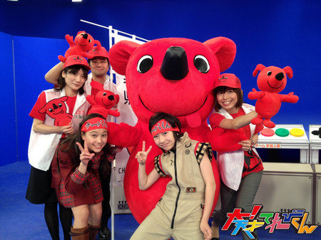
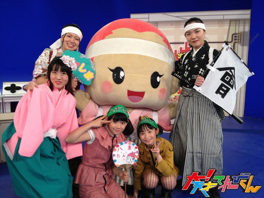
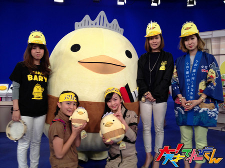
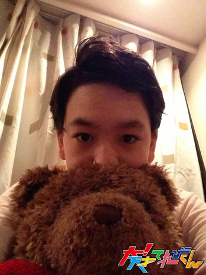

<<2013年3月 | トップページ | 2013年5月>>
2013年4月
【人生の中で最高に恥ずかしかった失敗】岡田結実
こんにちわ^^☆
小学校の頃
算数の授業で難しい問題がわかって
自信満々に手を上げたら、先生にあてられたので
答えを言ったら間違えていて、すごく恥ずかしかったです…
もう一つ、
友達と遊びに行く約束をしていて、
待ち合わせの場所で友達だと思って抱きついたら知らない人で…
間違えて抱きついてしまった方には
本当に申し訳なかったです…
もう
恥ずかしすぎました！
次はゆうがくん！
ゆうくん(ゆうがくん)との
エピソードは！！
ある日、楽屋でみんなで遊んだり
しゃべったりしてたら、
ゆうくんにいきなり
「ゆい」って呼ばれて、可愛いくて
少しドキッてしちゃいました☆笑
ゆうくんにはいつも
癒されてます！
投稿者:岡田結実 | 投稿時間:18時00分 | カテゴリ：We are 大天才テレビジョン | 固定リンク


 " title="ソーシャルブックマークについて">
" title="ソーシャルブックマークについて">
※NHKサイトを離れます。
【人生の中で最高に恥ずかしかった失敗】金子隼也
去年のNHK文化祭で
なかなか出番のない
カテゴリングをやらせてもらいました（笑）
嬉しさのあまり、
大勢の人の前で
かけ算を間違えてしまいました。
あっきーには
中学生でしょっ！ しっかりー！
って言われたし（笑）
あの失敗は忘れられません。
さて、次に書くのは結実!
結実とはあれこれ
メイク室で言い合っているんですが
全く勝ち目がありません。
メイクさんにも
隼也は結実に勝てないよと言われました（笑）
次は僕が勝てない結実が書きます！
投稿者:金子隼也 | 投稿時間:18時00分 | カテゴリ：We are 大天才テレビジョン | 固定リンク
" title="ソーシャルブックマークについて">
※NHKサイトを離れます。
【人生の中で最高に恥ずかしかった失敗】延命杏咲実
こんにちは、延命です。
はずかしかった失敗はたくさんあります！
私は、ドジなので（笑）
その中でも一番はずかしかったのは、
学校でやってしまったことです。
音楽会の練習の時、
リコーダーを使うにもかかわらず、
教室においてきてしまいました。
「おいてきちゃった！」と思い、
先生に「リコーダーをわすれたので、教室までとりに行っていいですか？」
と言ったら、
先生から「時間がないので、エアリコーダーで練習してください。」
と言われてびっくり！
仕方なくエアリコーダーで練習しましたが、
まわりのみんなにじろじろ見られて
すごくはずかしかったです。
はー。
私がドジじゃなければよかったのに・・・。
次の人は…
この間、しゅうろくが終わった後、
食どうでいっしょにごはんを食べていたら、
この後、じゅくがあると行っていたのに、
すごーくゆっくりごはんを食べていました。
はたして、この後しゅんやっくんは
じゅくに行ったのでしょうか？
しゅんやくんのブログをお楽しみに！
投稿者:延命杏咲実 | 投稿時間:18時00分 | カテゴリ：We are 大天才テレビジョン | 固定リンク
" title="ソーシャルブックマークについて">
※NHKサイトを離れます。
【人生の中で最高に恥ずかしかった失敗】中里萌
私が人生の中で、最高に恥ずかしかった失敗・・・(//∇//)
５年生の夏ごろ、教室から移動する時、
私は教室の前に並ばなきゃいけないために、
とても急いで、教室の中を走っていました。
と、その瞬間、
友達の机のわきにかかっていた、
なわとびにひっかかり
派手に転んでしまいました。
先に前で並んでいたクラス全員が
私の方を見て、笑い始めました。
この事件は、最高に恥ずかしかったです。（笑）
次の人は…
次の人は延命ちゃんです！
最近、メイクをしている時に、
ゲームの話で延命ちゃんと
とても盛り上がりました。（笑）
延命ちゃんは、
最近スマホに変え、
私もスマホなので、
２人が入れているアプリの話になると、
延命ちゃんは、そのアプリの
解説者になったかのように、話します。
その時の延命ちゃんは、
とても面白かったで〜す。（笑）（笑）
投稿者:中里萌 | 投稿時間:18時00分 | カテゴリ：We are 大天才テレビジョン | 固定リンク
" title="ソーシャルブックマークについて">
※NHKサイトを離れます。
【人生の中で最高に恥ずかしかった失敗】野田真哉
デパートであそんでで、
まいごのほうそうでともだちをよんだら
どうせいどうめいの人がきて・・・
しかも年上のせんぱいだったので
はしってにげました（笑）
でも、あのあとけっきょく３０分かけて
ともだちさがしました。
あそぶじかんもなくて、あそべず
かえるのもおくれておこられて
さんざんな１日でした・・・。
もうまいごほうそうはしません！
次の人は…
めぐたんしょたいめんの時
こんなにしゃべらなくて
しずかなてれび戦士がいるんだなぁーと思いました。
でも！
ほかのてれび戦士になれだしたら
めちゃめちゃおもしろくて
ポジティブで
だれよりれいせいなんです。
なんかめぐたんってふしぎですよねwww
投稿者:野田真哉 | 投稿時間:18時00分 | カテゴリ：We are 大天才テレビジョン | 固定リンク
" title="ソーシャルブックマークについて">
※NHKサイトを離れます。
人生の中で最高に恥ずかしかった失敗】ソーズビー航洋
えっと、昨年の放送の
「てれびちゃんのベスト１０」です。
ぼくとりょうきくんが、
あずさ２号を歌ったんですけど、
歌った後おじぎして、したあとに、
上半身がおきたときの顔が
お父さんに似ていて、
はずかしくて、顔が赤くなりながら
TVみてました（爆笑）
そんじゃー！
次の人は…
次はしんやでーす！！
しんやくんとは、同じしゅみで、
同じ文ぼう具をもってたり、
同じアクセサリーもってたりすんです！！
びっくり！！
しゅみあうんだなぁって思いました！！
次は何がかぶるんだろーWw
投稿者:ソーズビー航洋 | 投稿時間:18時00分 | カテゴリ：We are 大天才テレビジョン | 固定リンク
" title="ソーシャルブックマークについて">
※NHKサイトを離れます。
【押忍！シャイ番長友情の旅】 第３回 金子の日記
「押忍！シャイ番長友情の旅」３回目の放送、ご覧いただけましたか？
シャイ番長、苦労の末に知り合えたハミドさんと、ようやく釣りできるかと思いきや、まさかの風邪によるダウン…。
友だちをつくって釣りで友情を深めるミッションは失敗に終わってしまいました…。
シャイ番長にも、スタッフにも、まったくもって予測不可能なこの旅。
果たして、何回目で友だちをつくることができるのでしょうか！？
山あり谷ありの展開を、シャイ番長の日記でもお楽しみください。
左クリックをすると、原寸大になります。
投稿者:大天才テレビジョン社員１号 | 投稿時間:19時00分 | カテゴリ：お知らせ！ | 固定リンク
" title="ソーシャルブックマークについて">
※NHKサイトを離れます。
【人生の中で最高に恥ずかしかった失敗】中尾見晴
こんにちわーヽ(*^^*)ノ
どーも、ど〜も(＾▽＾)/
おわらい好きのみはる（小さいおばさん）やで〜！
最高に恥ずかしかった失敗は、
学校で友達とはしゃいでたら、
みんなの前で「ドカーン」ってしりもちついて
こけちゃってみんなに笑われたことやわー。（汚）
6年のはじめくらいで・・・。
自分で自分をこかしてしもたーo(*'o'*)o
そのこけ方がひざからじゃなくて尻もち
さらに頭をバンッ！・・・。
ハァ↓↓
なぜ、みはるはこんなにおっとり、おっちょこちょいなんやろか？？・・・。
まぁ、いいや！
これからも
「おっとりまったりお笑い好きの小さいおばさん」ということで
がんばるわ！！
応えん、よろしくやで〜！！
おおきに！！
次の人は…
ソーズビー君との最近のエピソードは・・・。
「おくさんごっこをしてくれたこと」やわ〜(*´∇｀*)
一緒に
「前きゅうりが1本120円→90円だったのよ」
などなど！
めっちゃ楽しかった！
ソーズビー君とはいろいろあそんだけど、
このおばさんごっこは一番おもしろかった！！
「大阪のおばちゃん」バージョンやったら
「あのね！おくさん、前きゅうりがめっちゃ安うねだんで売ってはってん」
などなど☆
みんなもやってみてや〜！
では！おおきに〜！
投稿者:中尾美晴 | 投稿時間:18時00分 | カテゴリ：We are 大天才テレビジョン | 固定リンク
" title="ソーシャルブックマークについて">
※NHKサイトを離れます。
【人生の中で最高に恥ずかしかった失敗】島田太一
こんにちはぁぁぁぁぁぁぁ(^∇^*)
エレベーターに金子くんとのって
下におりてるとちゅうに僕が
「しゃがんだらおもみで下に速く行くんじゃない？」
という発想をおもいついて
金子くんに言ったら、
近くにいた女の人に笑われました。
そこで到着して出ようとしたら
ドアにガッシャーンはさまれて、
また笑われてはずかしかったです。(//∇//)
次の人は…
この前、小さいおばさんの中尾見晴ちゃんに
僕の似顔絵を描いていただきました☆
この前は絵しりとりをしました！！
席がとなりになる機会がとても多いのですっ！！
そんな、メガネが似合う少女、みはるちゃんが次のブログをかきます。
投稿者:島田太一 | 投稿時間:18時00分 | カテゴリ：We are 大天才テレビジョン | 固定リンク
" title="ソーシャルブックマークについて">
※NHKサイトを離れます。
【大！木曜LIVE】富山中継終了！
『チャンカワイの大！相撲中継』
第２回は、富山県高岡市におじゃましました。
「チャン錦」（チャンカワイ）が都合により休場。
出川特命Ｐの指令を受けて登場したのが、強力な助っ人「ポコ錦」（クールポコ。小野まじめ）でした。
しかし、そんな「ポコ錦」も奇跡の６５歳・地元力士「國登」に惜敗。
「な〜に〜、やっちまったなぁ〜〜！！」と、ニイナが思ったかどうかは謎ですが、
高岡のゆるキャラ「家持くん」「利長くん」と一緒にふれあいの瞬間を激写しました！
対戦したいという方はこちらから応募してください。
投稿者:大天才テレビジョン社員３号 | 投稿時間:00時00分 | カテゴリ：大！木曜LIVE | 固定リンク
" title="ソーシャルブックマークについて">
※NHKサイトを離れます。
【人生の中で最高に恥ずかしかった失敗】山田陶子
こんにちは！
めぐちゃんこと・・・・・・
山田陶子です！
ゴメンナサイ・・・。
そうですねぇ・・・あれは３年生・・・
授業であてられた時
うれしくて、
せすじぴーん！ってして
立ったら、同時に、
「ブー」って
なっちゃったんです！！
はずかしかった
・・・・・・・・・・・・・・・・・・・・・・・・・・・・・・。
次の人は…

島田くんと美しくなるれん習を
したのですが、内容がうすいので
他の事を考えたら、なんにもなかったです。
ちなみに最近の島田くんは・・・
ハハハ・・・
投稿者:山田陶子 | 投稿時間:18時10分 | カテゴリ：We are 大天才テレビジョン | 固定リンク
" title="ソーシャルブックマークについて">
※NHKサイトを離れます。
【私のはじめて物語】金子隼也
こんにちは!
隼也です！
僕のはじめて物語は先日、フダケリの撮影ででタキシードを着たことです！
初めてだったので着る時は緊張しました。
でも着てみると着心地がめちゃくちゃ良かったです。
もっともっと着たーいと思いました。
新年度みんなで力を合わせて頑張ります！
みなさん、今年も宜しくお願いします。
次は陶子さん…
投稿者:金子隼也 | 投稿時間:18時00分 | カテゴリ：We are 大天才テレビジョン | 固定リンク
" title="ソーシャルブックマークについて">
※NHKサイトを離れます。
【私のはじめて物語】長谷川ニイナ
もう春ですね☆
「太一」の次は「ニイナ」でーす！！
この間ついに人生初のジェットコースターに乗りました！！
今までなかなか勇気が出ずに見ているだけだったんですけど、乗っちゃいましたよ〜！
今まで１度も乗ったことがないなんて、ダメですかねぇ〜。
でも、もうやってしまうとスリル感とスピードのコラボのとりこになってしまいました！！！
乗った直後は、放心状態なんですけどね d(*＾ｖ＾*)b
ジェットコースター最高！！ファンです♪
次に書く人は…
次は〜！！隼也でーす！！
隼也の印象はやっぱり「シャイボーイ☆」かな！？
人前に出ると恥ずかしがっちゃうから！！
でも実は真面目なんだよ〜！
頭も良いしね！！
次のブログもお楽しみに〜(*´ｖ｀*)
乞うご期待！！！
投稿者:長谷川ニイナ | 投稿時間:18時00分 | カテゴリ：We are 大天才テレビジョン | 固定リンク
" title="ソーシャルブックマークについて">
※NHKサイトを離れます。
【押忍！シャイ番長友情の旅】 第２回 金子の日記
「押忍！シャイ番長友情の旅」２回目の放送、ご覧いただけましたか？
せっかくカナダ人のキャスパーさんと知り合ったシャイ番長でしたが、
運悪く、釣りをするのは危険なほどの強風が吹き荒れてしまうという
スタッフ一同衝撃の展開となってしまいました…。
日本滞在中の貴重な時間を割いていただいていたのに、
本当に残念…。
写真は、ゼロから外国の人を探すこととなってしまい、
失意のシャイ番長と、優しいキャスパーさんです。
来週こそは、外国の人と、釣りをすることができるのでしょうか…！？
山あり谷ありの展開を、シャイ番長の日記でもお楽しみください。
左クリックをすると、原寸大になります。
投稿者:大天才テレビジョン社員１号 | 投稿時間:18時54分 | カテゴリ：お知らせ！ | 固定リンク
" title="ソーシャルブックマークについて">
※NHKサイトを離れます。
【私のはじめて物語】島田太一
こんにちは！！春です。
自分は輪ゴムで星の形を作れる様になりました。
学校の友達が作っていて作り方を教わりました。
２つの作り方のパターンを習いました。
次は速く星をつくれるように練習します。
まぁ、星をつくれてもなにも意味はないんですけどね。
無意味なことをたくさん練習したいです（笑）
次に書く人は・・・
次のブログは長谷川ニイナちゃんです。
ニイナちゃんは中２ですごくたよれるお姉さん的存在です。
でも、たまに天然な部分を見せます。
そんな元気なニイナちゃんが次のブログをかきます。
お願いしまぁーす m( __ __ )m
投稿者:島田太一 | 投稿時間:18時00分 | カテゴリ：We are 大天才テレビジョン | 固定リンク
" title="ソーシャルブックマークについて">
※NHKサイトを離れます。
【私のはじめて物語】ソーズビー航洋
前しゅんやに、お水の中にお酢を入れられて、知らないまま飲んだら、
「ぶっーーーー！」ってふいてしまいました(´Д｀)
リアクション芸人になった気分でしたww
あれはまずかったww
でも笑いがおきたから大丈夫！ww
みなさんにも飲んでほしいww
次に書く人は・・・
次は、たぁぁいちぃぃぃ！！！！
おにぎりいやしキャラd(ﾟ-^*)
たぶん読み書きは、ぼくより上手ですよ！
英検３級ですから！
すごーいけど・・・。
たまにバカ！！（爆笑）
ゆいとぼくがバカ出しているから太一は頭良いみたいになっているけど、
本当にごかいしないでください！
でも、やさしくて、みんなのアイドル。
ぼくも大好きなたーをよろしく！
KOYO.S
投稿者:ソーズビー航洋 | 投稿時間:18時00分 | カテゴリ：We are 大天才テレビジョン | 固定リンク
" title="ソーシャルブックマークについて">
※NHKサイトを離れます。
【大！木曜LIVE】激闘！カテゴリング「好きなゆるキャラ」編
ゆるキャラの名付け親・みうらじゅんさんオススメのキャラクターが地元の皆さんと一緒に来てくれました。ゲームはたいへん盛り上がり、見事「チーバくん」チームが優勝。データ放送での参加者は、過去最高の80142人を記録しました。

熊本県人吉市からやって来た「ヒットくん」。応援団は人吉温泉観光協会と熊本県東京事務局の皆さんです。人吉球磨の郷土玩具「きじ馬」をモチーフに作られました。

千葉県からやって来た「チーバくん」。応援団は千葉県庁の皆さんです。正面からでは分かりませんが、横から見ると千葉県の形になっています。

福島県からやって来た「八重たん」。応援団はふくしま八重隊の皆さん。大河ドラマ「八重の桜」の主人公・新島八重がモデルです。

愛媛県今治市からやって来た「バリィさん」。応援団はバリィさんのママたちです。頭の王冠は来島海峡大橋、腹巻に刺さっている船はお財布だそうです。
「激闘！カテゴリング」は毎月1回放送します。皆さんも是非、リモコン片手にゲームを楽しんでください。
テレビをインターネットに接続する方法はこちらから。
「NHKネットにつなごう！ホームページ」 http://www.nhk.or.jp/tsunagou/
また、「激闘！カテゴリング」から生まれたゲーム「ぐらぐらブロックタワー」が番組HPでも楽しめるようになりました。 http://www.nhk.or.jp/tvkun/ から、3体のアバターが肩車しているアイコンをクリック！
投稿者:大天才テレビジョン音楽制作部 | 投稿時間:21時30分 | カテゴリ：大！木曜LIVE | 固定リンク
" title="ソーシャルブックマークについて">
※NHKサイトを離れます。
【私のはじめて物語】野田真哉
友達どうしで電車にのって水族館に行きました。
ほんとは１時間くらいでつくところに３回、４回ものりすごし
２時間３０分くらいかかりました。
でも、いってからもこどもだけだったので思いきりあそべて楽しかったです。
次に書く人は・・・
おもしろくていつも周りを明るくしてくれます。
いつもそんな感じだけど、やるときはめちゃめちゃ真剣です。
そんなソーズビー君はおもしろくてたよりがいのある先輩です。

野田がソーズビーの写真を撮り忘れたので、こちらは自分撮り写真です。
投稿者:野田真哉 | 投稿時間:18時00分 | カテゴリ：We are 大天才テレビジョン | 固定リンク
" title="ソーシャルブックマークについて">
※NHKサイトを離れます。
【私のはじめて物語】岡田結実
こないだ帰りの時に、うれしいことがあって（うれしいことはひ・み・つ）、
うれしすぎてこしがぬけちゃいました。
それからも、もう立てなくなってしまい、
６分ぐらいたったあとにたてました。笑
もうあれが本物のこしぬけか！！笑 みたいな笑。
本当にオモシロイですよ☆
はじめてのこしぬけ、もうにどとけいけんはできないぐらいのけいけんです！！
楽しかったです。＾ー＾笑
次に書く人は・・・
次は野田しんです！
野田しん（野田しんや）、ダンスがうまくて歌もうまい！
一度みなさん野田しんのダンスを見て下さい！
よし！のだしんのはじめて物語、どーぞ！！
投稿者:岡田結実 | 投稿時間:18時00分 | カテゴリ：We are 大天才テレビジョン | 固定リンク
" title="ソーシャルブックマークについて">
※NHKサイトを離れます。
【私のはじめて物語】中里萌
こんにちわぁぁ〜！
めぐむで〜す。
私が最近、初めて体験したことは、「卒業」です。
学校生活、初めての「卒業」。
仲の良かった友達と中学校が別々になってしまうなど、
つらいこと悲しいことが沢山あり、
卒業式の時はたくさん泣いてしまいました。（涙）
次に書く人は・・・
次の人は・・・結実ちゃんで〜す。
私が分からないことや困ったことがあった時は、
いつも助けてくれます。
リーダー的存在で、私とは同じ年だと思えないほど、大人です。
結実ちゃん、いつもありがとう！
投稿者:中里萌 | 投稿時間:18時00分 | カテゴリ：We are 大天才テレビジョン | 固定リンク
" title="ソーシャルブックマークについて">
※NHKサイトを離れます。
【押忍！シャイ番長友情の旅】 第１回 金子の日記
今日から始まった新企画「押忍！シャイ番長友情の旅」。果たして金子は、外国の人と友だちになれるのか？
次回も気になるところですが、このブログでは金子が書いている日記を毎回紹介していきます。
中２男子のシャイ男の筆づかい、いや息づかいまでも感じてほしいので、左クリックをすると原寸大になるようにしました。
金子のシャイぶりを文章でもお楽しみ下さい！
投稿者:大天才テレビジョン社員１号 | 投稿時間:19時00分 | カテゴリ：お知らせ！ | 固定リンク
" title="ソーシャルブックマークについて">
※NHKサイトを離れます。
【私のはじめて物語】竹原司
こんにちは〜！！司で〜す！！今年度もよろしくお願いします！！
僕のはじめて物語は、昔なつかしい駄菓子屋さんでパチンコを買って遊んだことです。
パチンコの玉はティッシュをまるめて、セロハンテープで固定して作りました。
思っていたより、飛びます。的を決めて飛ばしましたがなかなかむずかしいです。
目当ての場所に当てるにはこつがいるみたいで、いろいろ試し中です。
皆さんも昔なつかしい遊びをしてみて下さい。おもしろいですよ〜！！
次に書く人は・・・
次の人は萌ちゃんです！
おしとやかそうでおとなしそうだと最初は思っていたけど、
意外に怖い話しとかギャグとかがスキで一発芸はすごくおもしろいです。
ではこの辺で、萌ちゃんよろしく！！！
投稿者:竹原司 | 投稿時間:18時00分 | カテゴリ：We are 大天才テレビジョン | 固定リンク
" title="ソーシャルブックマークについて">
※NHKサイトを離れます。
【私のはじめて物語】黒澤美澪奈
こんにちは（＾０＾）／ みれなです！
はじめて物語は・・・
「たくあん」がずっときらいだったけど、はじめて食べてみてすごくおいしかった・・・
ってことです。
そもそも、つけ物が苦手だったので、食べずきらいだったからですかね・・・。
これからは、いろいろな物をたべたいです。
次に書く人は・・・
次は竹原司くんです。
つかちゃんは、たべるのが大好きな男の子です！
「かわい〜い。かわい〜い」といわれて
みんなのアイドルです！
投稿者:黒澤美澪奈 | 投稿時間:18時00分 | カテゴリ：We are 大天才テレビジョン | 固定リンク
" title="ソーシャルブックマークについて">
※NHKサイトを離れます。
【大！木曜LIVE】青森中継終了！
新企画『チャンカワイの大！相撲中継』がスタート！
“さすらいのふれあい力士”「チャン錦」（チャンカワイ）が、
全国各地の「地元力士」とガチンコ相撲で対決します！
第１回は、青森県鰺ヶ沢町におじゃましました。
チャンカワイと対戦したい人はこちら！
投稿者:大天才テレビジョン社員１号 | 投稿時間:21時00分 | カテゴリ：大！木曜LIVE | 固定リンク
" title="ソーシャルブックマークについて">
※NHKサイトを離れます。
【私のはじめて物語】中尾美晴
（いい話やで〜）
初めて大きい自転車に！
まず「自然の色ー」とか「ライトの種類」とかを決めて〜
私は乗った 「アー」
そのしゅんかんゆらついたけど、
次の日には乗れるようになったで
「努力」っていいね…。
次に書く人は・・・
とにかくめっちゃ可愛いしー
いつも優しくしてくれて〜
美晴のお姉ちゃんみたいな存在だよ！
お楽しみに〜
投稿者:中尾美晴 | 投稿時間:18時00分 | カテゴリ：We are 大天才テレビジョン | 固定リンク
" title="ソーシャルブックマークについて">
※NHKサイトを離れます。
【私のはじめて物語】山田陶子
コンニワ！！
私のお話きいてください！！
なんと人生初！！
手からぬくもりを感じるって言われたんです！！
ウレピィー
ヘッ
いいでしょ！！
ちなみに言ってくれたのはみはるっちでした！！やさしい！！
次に書く人は・・・
次の人は、みはるっちでーす！！
みはるっちはかわいくて、やさしくて、大好き☆
これからもよろしく
みはるっち！！
投稿者:山田陶子 | 投稿時間:18時00分 | カテゴリ：We are 大天才テレビジョン | 固定リンク
" title="ソーシャルブックマークについて">
※NHKサイトを離れます。
【私のはじめて物語】相澤侑我
こんにちは！新人の相澤侑我です。
ぼくはこの間、初めてウミガメをさわりました！！
学校でウミガメを飼育しているんですけど、休み時間にカメの近くの水道で水をのんでいたら、
ちょうどカメの世話をしていた主事さんにさわらせてもらいました！
次に書く人は・・・
次の人は、陶子さんです！！
陶子さんはテレビでみている時に、ふだんどんな人か
想ぞうがつかなくて、どんな人なんだろうなぁってずっと思ってました！
実際あってみたらすごく優しくて、みんなをまとめてくれるリーダー的なそんざいでした！！
これから、陶子さんほか１１人でがんばっていきます☆(≧o≦)
これからもよろしくお願いします！！
投稿者:相澤侑我 | 投稿時間:18時00分 | カテゴリ：We are 大天才テレビジョン | 固定リンク
" title="ソーシャルブックマークについて">
※NHKサイトを離れます。
【私のはじめて物語】延命杏咲実
どうも！こんにちは！！
なぜか４年生になった延命です！！
『私のはじめて物語』ってほどでもないですけど・・・私ははじめてタコライスを食べました。
いとこの家にとまりに行った時に、いとこのお母さんがタコライスを出してくれました。
それが、とってもおいしくてびっくり！
あま口にしてくれてうれしかったです！
からいの私、苦手なので・・・。
でも、ちょっとはずかしい事をしてしまいまして・・・
実は私、タコが入っていると思ってしまったのです！！
でも、なんでタコライスって名前にしたのですかねぇ・・・。
ちょっとまぎらわしいですね！！
次に書く人は・・・
次の人は、ゆうがくんです！！
なんか、れいぎただしいですね！本当に！！
スタッフさんに何か言われると、「はい！」と元気に答えていました！！
一つしか年がちがわないのに、すご〜い！！
みんなともスタッフさんとも楽しくすごせるゆうがくんのブログ、お楽しみに！！
投稿者:延命杏咲実 | 投稿時間:18時50分 | カテゴリ：We are 大天才テレビジョン | 固定リンク
" title="ソーシャルブックマークについて">
※NHKサイトを離れます。
ページの一番上へ▲